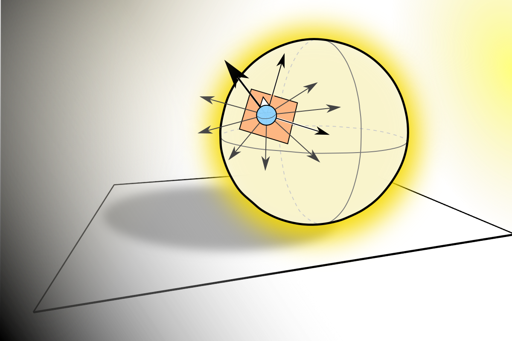

I am responding to the intriging interview of Ariana Ijaduola in the INTER magazine. I have met and talked with Ari over the past year and she has tried to convince me that we have diferences in behavior because she sees herself as a 'visual' person. She clearly finds prefers youtube videos, whereas I prefer static images when we go to receive technical information. I was unconvinced however, because I see myself as a visual person as well. I went about theorizing that perhaps we see the same images in our miind, but we process them in different manners due to disparate interests. I also think that their are other factors such as mental processing speed at play, because although I am quick at using pre-cached information, I am confidant that my mind processes new incoming information slower than that of an average brain, which is why I have received double time on nearly every test that I have taken in my life. I theorize that Ari focuses on the concrete details of what she is seeing, and that I tend to see the more abstract details such as skin materiality, facial morphology. I wonder if this is what has led me to like mathematics, or whether my interest in the abstract has simply informed my way of seeing. In any event, I would ask Ari if there are any insights from her research that could be used in my attempts to elevate the awareness of mathematics through similar inquiries into Illustration.
| Influence | Link | My Reaction |
|---|---|---|
| Jiayin Xie | No Link. She made a diorama classifying a bunch of used clarinet reeds based on appearance. | Her Clarinet Reeds dichotomy visualized part of the infrastructure behind musical production. |
| Antonín Dvořák | From the New World Symphony | His From the New World Symphony conveys the feelings of America. |
| George Gershwin | Rhapsody in Blue | Rapsody in Blue conveys the feelings of New York City. |
| Wassily Kandinsky | Link. | His theories on painting have interesting nuggests about the representation of abstraction. |
| Keenan Crane | Link | He is making the invisible world of discrete differential geometry visible and meaningful. He has also done a fantastic job of synthesizing information in his teaching. |
| Katherine Ye | Link. | She is making the ingredients for mathematical arguments visible and meaningful. |
| Kayvon Fatahalian | Link | He is made the differences between processors and visible and meaningful. |
| Robert Tarjan | Wikipedia Link. Data Structures and Network Algorithms | Tarjan has a gift for articulating himself clearly and conscisely in writing. His delivery of meaning to peers is as efficient as his beautiful algorithms. I especially like his book, Data Structure and Network Algorithms. |
| Grant, 3Blue1Brown | Link. | His Patreon channel 3 Blue, 1 Brown, produces animations about mathematics the exhibit craft in their production and stories that have been well user tested. |
| Steins;Gate | Link. | Steins;Gate is my favorite story that I have ever seen. As far as humanizing abstract concepts, Steins;Gate gets to the heart and complexity of time. |
| LogixComix | Link. | It nails the heart of why early 20th century mathmaticians cared about solidifying the foundations of mathematics. |
| Trashed | Link. | A humerous tail that both visualizes the waste system and synthesizes lots of information about it. |
| Stuff Matters: Exploring the Marvelous Materials That Shape Our Man-Made World | Link. | I came away caring a lot more about the hardness of materials, whether they melt in one's mouth, etc. Awareness and synthesis of material science. This book also clearly explained on the chemical level why glass lets visible light through, but not ultraviolet radiation. We are using the structure of this book as a guide for our Graphic Novel story environment. |
| Space Chem | Link. | Players create chemical reactions through a simplified procedural model of atomic bonding. |
| The Resistance | Link. | Players practice the art of concealing and deducing information about the motivations of their fellow players. |
| Rollercoaster Tycoon | Link. | Players build rollercoasters while being constrained by the laws of physics, and of human experience. |
| Arun Marsten | Link. See "Screaming Bagpipes." | His screaming booth at CMU was an interactive experience that encouraged people to make their feelings of stress known loudly and publically to the community. It was brilliant. |
| Alan Blackwell | Visual Representation Article. Personal Homepage | He claims to study how do people make, see and use things that carry meaning. This is similar to my study of the communication between human beings who are not peers. |
| Edward Tufte | Link. | He has written books on making images that convey statistics and meaning more efficiently. I like his ways of analyzing an image based on the number of meaningful elements. For instance, he has been able to quantify the percentage of meaning carrying ink to total ink on the page. |
| Peggy Sheehy | Link. | Peggy is the real deal. She understands how to use the educational potential of games as scalfolded expriences, rather than artificial carriers of a message. |
I did the reading.
My visuals are meant to illustrate the three stages of empathetic teaching between non-peers.
The first one is about abstraction. It shows an example depiction of a sphere a normal, and a uniform aura, meant to depict diffuse light reflection. I think that images such as these should be used more when communicating novel technical information.
The second image is an amalgamation of different stylings for a narrator character who will be walking my readers through a book I'm writing on Computer Graphics.
The third image is of the Space Chem game, that satisfies most of my criteria for an Educational Game: It presents the material through mechanics, rather than skin, it allows the player to act at the level of meaning, it scalfolds the experience of working with chemical bonding, it provides space for creativity, where players can come up with better solutions over time.